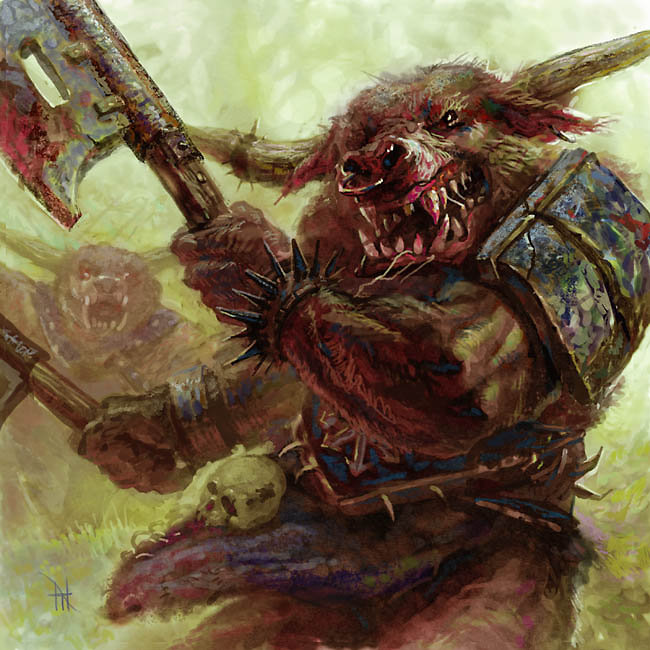

Minotaur

You approach the 7th Gate only to find it guarded by the demon Minotaur!
You must battle your way out of Hell! Roll the six-sided die to select one of the six weapons you see before you.
- 1 = 4-sided die
- 2 = 6-sided die
- 3 = 8-sided die
- 4 = 10-sided die
- 5 = 12-sided die
- 6 = 20-sided die
Now roll the six-sided die again to see which weapon the Minotaur will use.
You each have starting max HP of 100, and you get the first attack. You have one advantage over the Minotaur: the power to steal his vitality. If you roll the highest value on your die, you recover that amount, in addition to afflicting that amount of damage. The first one to get their opponent's HP to 0 or less wins.